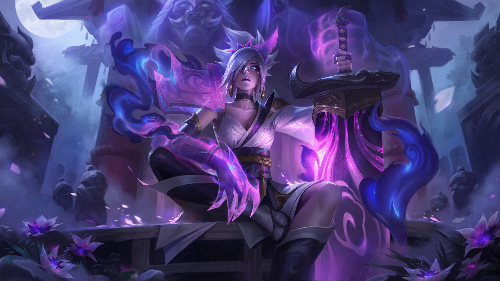

Riven
Riven es un personaje (campeón) del popular juego en línea "League of Legends" (LoL). Su historia
está integrada en el universo del juego, que es un vasto escenario con personajes y
regiones interconectados. Aquí tienes una breve historia de Riven:
Riven, la Exiliada, solía ser una comandante en el ejército de Noxus, una de las grandes
potencias de Runaterra.Noxus es conocida por su militarismo y su búsqueda de poder, y
Riven era parte integral de esa máquina de guerra. Era una maestra de la espada y estaba
al mando de un destacamento de soldados.
Sin embargo, durante una campaña militar en Ionia, Riven presenció la brutalidad de las
tácticas noxianas, que incluían el uso de armas químicas. Esto chocó con sus principios y,
horrorizada por lo que estaba ocurriendo, decidió desertar del ejército de Noxus.
Abandonando su posición y renunciando a su título de "Guardiana de la Espada", Riven se
convirtió en una fugitiva y una exiliada.
 En su viaje de autoexilio, Riven buscó redención y un sentido de propósito. Portando una espada rota y sin el apoyo de su antigua nación, se enfrenta a la batalla con un estilo único, combinando su habilidad en la espada con la manipulación del viento y la magia. A medida que avanza la historia en el juego, Riven lucha contra su pasado y las decisiones que la llevaron a la deserción. Su historia representa la lucha interna de redimirse y encontrar su camino en un mundo conflictivo. La narrativa de Riven se entrelaza con otros personajes de League of Legends, creando un tapiz complejo de historias que dan forma al universo del juego.
Estilo de Juego:
Riven es un campeón de alto riesgo y recompensa. Su agilidad le permite realizar jugadas destacadas, pero su falta de resistencia la hace vulnerable si se la enfrenta de manera incorrecta. Dominar Riven implica aprender a ejecutar sus combos de habilidades de manera efectiva y aprovechar su movilidad para superar a los oponentes.
Habilidades:
iven es conocida por su estilo de juego ágil y su habilidad con la espada rota. Sus habilidades se centran en rápidos combos de ataques y movimientos evasivos. Algunas de sus habilidades incluyen:
- Fragor del Exilio (Runic Blade): Riven utiliza cargas para mejorar sus ataques básicos, permitiéndole infligir daño adicional.
- Estallido de Ki (Broken Wings): Ejecuta hasta tres ataques rápidos consecutivos.
- Golpe de Valor (Ki Burst): Riven da un golpe en el suelo, dañando y aturdiendo a los enemigos cercanos.
- Cuchillada (Blade of the Exile): Riven potencia su espada, aumentando su rango y daño. Además, obtiene una habilidad adicional llamada Viento Furioso.
- Viento Furioso (Wind Slash): Habilidad adicional de Cuchillada que inflige daño en un cono basado en la salud faltante del enemigo.